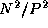
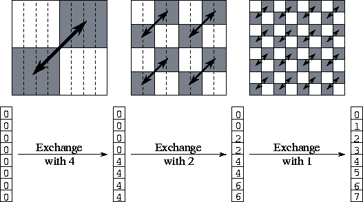
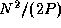
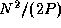

![[DBPP]](pictures//asm_color_tiny.gif)


![[Search]](pictures//search_motif.gif)
The transposition of a two-dimensional N
 N
matrix
A
yields a matrix A'
of the same size, in which . If A
and/or A'
are distributed between multiple
tasks, then execution of the transpose operation may involve
communication. We consider here a one-dimensional, columnwise
decomposition of the input and output matrices among P
tasks.
Notice that this transposition requires all-to-all communication.
N
matrix
A
yields a matrix A'
of the same size, in which . If A
and/or A'
are distributed between multiple
tasks, then execution of the transpose operation may involve
communication. We consider here a one-dimensional, columnwise
decomposition of the input and output matrices among P
tasks.
Notice that this transposition requires all-to-all communication.
One commonly used transposition algorithm proceeds in P-1 steps, with each task exchanging  data with another task in each step, for a per-processor communication cost of
This algorithm was used in the convolution example in Section 4.4. An alternative algorithm, described here, uses the hypercube communication template to reduce message startup costs at the expense of increased data transfer costs. The basic idea is similar to that used in the recursive halving reduction algorithm, but because the operator used to combine messages in the transpose is ``append'' rather than ``reduce,'' message sizes do not become smaller as the transpose proceeds.

Figure 11.3: The three steps of the matrix transpose
algorithm when P=N=8. Initially, each task has a single column of
the matrix. After the transpose, each task has a single row. In each
step, each task exchanges one half of its data; this data is shaded in
the upper part of the figure. The lower part of the figure shows the
origin of the eight values held by task 0 at each step of the algorithm.
Task 0 sends elements 4--7 in its first message and receives four
elements from task 4; these are stored in locations 4--7. In the
second step, task 0 exchanges both elements 2--3 (its own) and 6--7
(from task 3) with task 2. In the third step, it exchanges elements 1
(its own), 3 (from task 2), 5 (from task 4), and 7 (from task 6) with
task 1.
The algorithm proceeds as follows. Tasks are partitioned into two sets. Corresponding pairs of tasks in the two sets exchange the one half of their data that is destined for tasks in the other set. Tasks 0..(P/2)-1 communicate the lower half of their data, while tasks (P/2)..P-1 communicate the upper half. This partitioning and exchange process is repeated until each set contains a single task. See Figure 11.3 for more details.
As each of the  messages has size , the
communication cost is:
messages has size , the
communication cost is:
A comparison of Equations 11.3 and 11.4
shows that the hypercube algorithm sends about fewer
messages but  times more data. In most situations, the
data transfer term dominates, and the
times more data. In most situations, the
data transfer term dominates, and the  algorithm is to be
preferred. However, we can expect the algorithm to be
competitive on small problems and when message startups are expensive
and transfer costs are low.
algorithm is to be
preferred. However, we can expect the algorithm to be
competitive on small problems and when message startups are expensive
and transfer costs are low.
© Copyright 1995 by Ian Foster